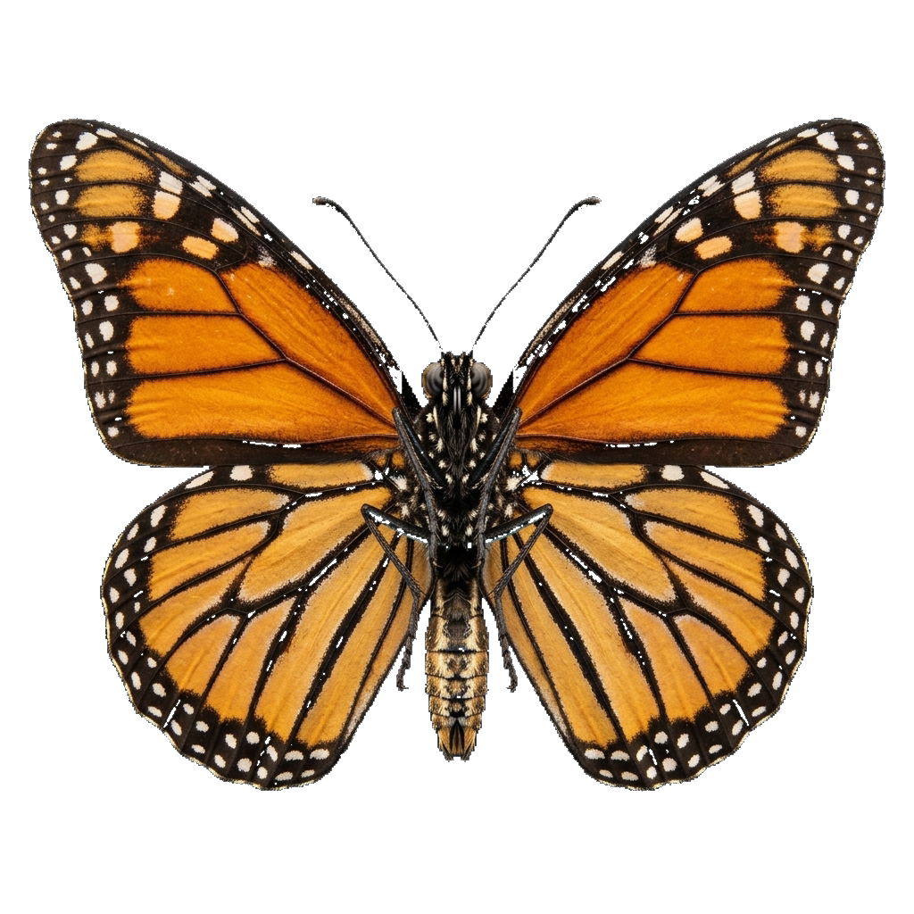

THE WORLD OF BUTTERFLIES
A showcase of aerodynamic architecture and microscopic wing scale venation. Experience the beauty with an authentic front-facing 3D perspective.
Thermal Flight Activation.
Resting on rainforest petals in the morning mist, the butterfly absorbs radiant solar warmth through dark wing venation, warming thoracic flight muscles to 30°C before liftoff.
The Sensory Cockpit.
The cephalic capsule houses sensory input hubs: compound eyes, chemical antennae, and the feeding proboscis, coordinating navigation, flight trim, and floral chemoreception.
Chemosensory Antennae.
Clubbed antennae studded with thousands of sensilla hair receptors detect floral scents up to 3 km away. Johnston's organ at the base acts as an inertial flight gyroscopic compass.
17,000 Hexagonal Ommatidia.
Butterflies see in ultraviolet and polarized light, granting 340° panoramic vision to detect invisible nectar guide patterns on petals and track solar orientation during migration.
The Coiled Proboscis.
A dual-lumen capillary feeding straw that coils into a tight golden spiral beneath the head. Internal hydrostatic blood pressure uncoils the tube into deep nectar wells.
The Thoracic Powerhouse.
A heavily sclerotized chitin cage housing asynchronous flight muscle groups. By deforming the thoracic box, it drives all four wing hinges at 12 beats per second with minimal energy.
Biconvex Wing Venation.
Supported by hollow, blood-filled vein struts that provide structural rigidity during high-speed gliding. Forewings and hindwings overlap to create a unified dynamic aerofoil.
Overlapping Wing Scales.
Shingled like roof tiles, microscopic chitin scales contain carotenoid pigments and micro-grooves that diffract light, shed raindrops, and generate low-drag laminar boundary layers.
Articulated Tarsal Limbs.
Equipped with hooked pretarsal claws for perching in high winds. Specialized chemoreceptors on the feet allow females to "taste" leaf chemistry before laying single eggs.
Segmented Abdomen.
Composed of 10 flexible chitin rings flanked by microscopic spiracle breathing valves. Contains the heart tube, fat storage bodies, and digestive organs that sustain transatlantic migration.
Harmonic Biological Equilibrium.
All 9 microstructures working as a single aerodynamic organism. Proceed into flight physics and fluid mechanics.
Clap-and-Fling Vortex Lift.
Butterflies do not flap mechanically; at the peak of each upstroke, wings clap together and peel apart, capturing a low-pressure leading-edge vortex that generates double the lift of rigid aerofoils.
The Four Acts of Metamorphosis.
From an embryonic gem to the winged imago.
The Embryonic Gem
Sculpted barrel-shaped egg laid on milkweed leaves, fortified with structural ribs and microscopic respiration pores.
The Voracious Instar
Striped caterpillar increases body mass by 3,000 times across 5 molting instars, storing cardenolide toxins for life.
The Jade Chrysalis
Suspended by a silk button. Larval tissues dissolve into imaginal discs to reconstruct adult eyes, wings, and flight muscle.
The Winged Imago
Adult emerges, pumping hemolymph through hollow wing veins to expand flight membranes into living art.
Crown Jewels of the Air.
Select a specimen to observe real-time structural coloration and wing morphology.

Monarch Butterfly
Legendary transcontinental navigators migrating over 4,000 kilometers from Canada to the oyamel fir forests of central Mexico using an internal sun compass.
Guardians of Biodiversity.
As butterflies flutter between wildflowers sipping nectar, their delicate legs and thorax transport vital pollen grains, fertilizing over 75% of global flowering species and sustaining terrestrial life.
Every Wing Tells a Story.
Keep exploring the fragile wonders of our natural world. Protect wild habitats, cherish biodiversity, and walk with reverence.